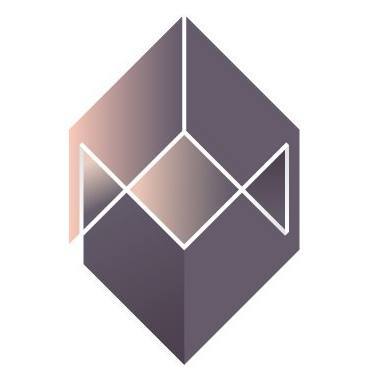
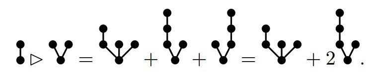

Lie–Butcher series
What and why
ICT Engineering, Bergen University College, Norway

Presentation created using reveal.js
Navigation: Hit Space to move forward, Shift+Space to move backwards. ESC for an overview.
The what
Lie–Butcher series is a mathematical tool for studying numerical methods for dynamical systems evolving on homogeneous manifolds
The why
Lie–Butcher series are interesting from several points of view:
- Algebra (pre- and post-Lie algebras, Hopf algebras)
- Geometry (homogeneous manifolds, connections)
- Applications (numerical methods)
Butcher series
Lie–Butcher series is a generalization of Butcher series
B-series gives a way to study differential equations on vector spaces.
(References: Butcher. 1963, Hairer, Lubich, Wanner. 2006)
Consider a differential equation on $\mathbb{R}^n$:
$$y' = f(y), \quad y_0 = y(0)$$
By iteratively differentiating the expression, we can write the solution as a formal power series
$$y' = f(y), \quad y_0 = y(0)$$
$$\begin{align*} y'' &= f'(y)\, y' = f'(y) f(y) \\ y''' &= f''(y) y' f(y) + f'(y) f'(y)y' = f''(y) \left(f(y)^2\right) + \left(f'(y)\right)^2f(y)\\ y^{(4)} &= f'''(y)(f(y))^3 + 4 f''(y)f'(y)(f(y))^2 + (f'(y))^2 f'(y)f(y)\\ &\vdots \end{align*}$$
Obtain a (messy!) Taylor series expansion of the solution in derivatives of $\,f$
Cayley, 1852 (Merson, 1957): The derivatives of $f$ can be associated to rooted trees.

Elementary differentials $\,\mathcal{F}$: vector fields defined recursively on trees.
We can rewrite the series expansion of the solution as a series of elementary differentials indexed by trees.
$$y = \sum_{\tau \in T} \alpha(\tau) \mathcal{F}(\tau).$$
A Butcher series
Numerical methods as B-series
Many numerical methods can be represented as B-series
Example: Midpoint method
$\begin{align*}y_{k+1} &= y_k + hf(y_k) + \frac{h^2}{2} f'(y_k) f(y_k) + \mathcal{O}(h^3) \end{align*}$ Consider a numerical time-stepping method
$$\phi_{h,f}: \mathbb{R}^n \rightarrow \mathbb{R}^n,$$
with $\,y_{k+1} = \phi_{h,f}(y_k)\,$ and $\,y_k \approx y(kh)$.
If $\,\phi\,$ is for example a Runge–Kutta method, then it can be expanded in a B-series
$$y_{k+1} = y_k + \sum_{t \in T} h^{|t|}\alpha(t) \mathcal{F}_f(t)(y_k).$$
B-series methods
A question
Which methods are B-series methods?
B-series methods are exactly the local, affine equivariant methods, McLachlan, Modin, Munthe-Kaas, Verdier. 2014. arXiv:1409.1019
The why
What can we use Butcher series for?Order theory
Assume we have expressed a numerical method as a B-series
$$y_{k+1} = y_k + \sum_{t \in T} h^{|t|}\alpha(t) \mathcal{F}_f(t)(y_k).$$ We can find the order by comparing with the B-series for the exact solution.
Example: The coefficients of the midpoint method agree with the coefficients of the exact B-series up to order 2. Therefore: second order method.
Structure-preservation
Structure-preserving properties of the B-series method can be captured in the coefficients.
Example: A vector field $F$ given by a B-series is Hamiltonian if
$$\alpha(\tau_1 \circ \tau_2) + \alpha(\tau_2 \circ \tau_1) = 0$$
for all trees $\tau_1$,$\tau_2$. The product is the Butcher product. It is symplectic if
$$\alpha(\tau_1 \circ \tau_2) + \alpha(\tau_2 \circ \tau_1) = \alpha(\tau_1)\alpha(\tau_2).$$
Calvo, Sanz-Serna. 1994. Hairer, Lubich, Wanner. 2006
Help us uncover connections to other fields
This is the point that's perhaps most interesting for us today.
One of the most important structures in this regard:
Pre-Lie algebras
Also: Combinatorial and incidence Hopf algebras, noncommutative Bell polynomials, Faà di Bruno formulas
Pre-Lie algebras
Weakened associative algebras that still gives rise to Lie algebras
Definition: A vector space $A$ equipped with a bilinear product $\triangleright$ such that
$$[L(a), L(b)] = L([a,b)],$$
where $L(a)$ denotes left multiplication $L(a)\triangleright b = a \triangleright b$.
In other words: $$a_{\triangleright}(a,b,c) - a_{\triangleright}(b,a,c) = 0,$$
where $a_{\triangleright} = (a\triangleright b)\triangleright c - a \triangleright (b \triangleright c)$ is the associator.
Note: $\,[a,b] := a \triangleright b - b \triangleright a\,$ defines a Lie algebra on $A$.
Examples
The pre-Lie algebra of vector fields. Let $\nabla$ be a flat and torsion free (Koszul) connection on the tangent bundle of a manifold $M$.
$$v \triangleright w := \nabla_v w$$
is pre-Lie.
The pre-Lie algebra of trees. The set of rooted nonplanar trees $\mathcal{T}$ equipped with the grafting product:
This is the free pre-Lie algebra on one generator. (Ref: Chapoton–Livernet, 2001)
Elementary differentials revisited
The vector fields $\mathcal{X} \mathbb{R}^n$ form a pre-Lie algebra. Since $\mathcal{T}$ is the free pre-Lie algebra there is a pre-Lie map $\mathcal{F}$ satisfying
$$\begin{align*}
\mathcal{F}(\bullet) &= f\\
\mathcal{F}(\tau_1 \triangleright \tau_2) &= \mathcal{F}(\tau_1) \triangleright \mathcal{F}(\tau_2).
\end{align*}$$
Pre-Lie B-series
Forget the vector fields and formulate B-series as expansions in pre-Lie algebras:
$$\sum_{\tau \in \mathcal{T}} \alpha(\tau) \tau$$
Lie–Butcher series
A generalization to differential equations on homogeneous manifolds. I.e. manifolds equipped with transitive actions by Lie groups. Think spheres or $SO(3)$.
Lie group methods aim to approximate differential equations
$$y' = F(y) = f(y) \cdot y, \quad y(0) = y_0,$$
where $F$ is a vector field, represented by $f: M \rightarrow \mathfrak{g}$, where $\mathfrak{g}$ is the Lie algebra of $G$.
Example: Runge–Kutta–Munthe-Kaas methods
Reference: Lie group methods. Iserles, Munthe-Kaas, Nørsett, Zanna. 2000
Constructing LB-series
Similar story to B-series, but nonplanar trees are replaced by forests of planar trees, and pre-Lie algebras by post-Lie algebras.
A Lie–Butcher series:
$$\sum_{\omega \in F} h^{|\omega|} \alpha(\omega) \mathcal{F}_f(\omega)$$
Why?
What can Lie–Butcher series be used for?- Order theory
- Structure-preservation
- Help us discover connections to other fields
Post-Lie algebras
A Lie-algebra $\,[\cdot, \cdot]\,$ equipped with a bilinear product $\,\triangleright$, satisfying compatibility relations:
where $a_{\triangleright}$ is the associator.
Reference: On Post-Lie algebras, Lie–Butcher series and Moving frames. Lundervold, Munthe-Kaas. 2013.
Facts:
- A post-Lie bracket with $\,[\cdot,\cdot] = 0$ is a pre-Lie algebra
- A flat and constant torsion connection $\nabla$ on a manifold $M$ gives rise to a post-Lie algebra on the smooth vector fields $\mathcal{X}M$ equipped with the torsion bracket
- The free post-Lie algebra is the free Lie algebra over planar rooted trees, equipped with the left grafting product: $$\mbox{postLie}(\bullet) = \{\mbox{Lie}(\mbox{OT}), [\cdot, \cdot], \triangleright\}$$
- The so-called D-algebras are universal enveloping algebras of post-Lie algebras
- Post-Lie algebras also appear in the theory of operads. Homology of generalized partition posets. Vallette. 2007
Some future work
- SW implementation of algebraic structures, with the goal of doing order theory etc. Work in progress, together with Munthe-Kaas and K. Føllesdal (a new PhD student of HMK).
- Which methods can be represented as LB-series?